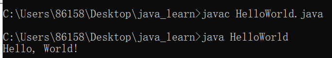
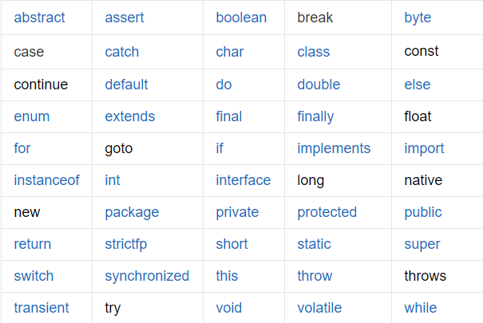

新建HelloWorld.java文件
// 定义一个类HelloWorld,类名必须与文件名相同
public class HelloWorld {
public static void main(String[] args) {
System.out.println("Hello, World!");
}
}编译和运行
javac HelloWorld.java //编译
java HelloWorld //运行
（1）所有关键字

（2）标识符
是指在程序中，我们自己定义的内容，比如类名，方法名和变量名等等
命名规则
命名规范
基本数据类型
变量的定义
public class Variable {
public static void main(String[] args){
int i = 12;
System.out.println(i);
float f = 0.5f;
System.out.println(f);
char c = 'B';
System.out.println(c);
}
}自动转换
public class DataType {
public static void main(String[] args){
int i = 5;
byte b = 2;
// byte类型比int小，做运算的时候会自动把byte类型转换成int类型
int j = i + b;
System.out.println(j);
}
}强制转换
public class DataType {
public static void main(String[] args){
double i = 2.33;
System.out.println(i); //2.33
//把double类型强制转换成int类型
int j = (int) 2.33;
System.out.println(j); //2
}
}判断语句
public class DemoIfElse {
public static void main(String[] args){
int score = 74;
if(score<0 || score>100){
System.out.println("数据错误");
}else if(score>=80 && score<=100){
System.out.println("优秀");
}else if(score>=60 && score<80){
System.out.println("及格");
}else{
System.out.println("不及格");
}
}
}选择语句
public class DemoSwitch {
public static void main(String[] args){
int i = 2;
switch(i){
case 1:
System.out.println("星期一");
break;
case 2:
System.out.println("星期二");
break;
case 3:
System.out.println("星期三");
break;
default:
System.out.println("数据错误");
break;
}
}
}public class DemoFor{
public static void main(String[] args){
//for循环
for(int i=1;i<=10;i++){
System.out.println(i);
}
//while循环
int j = 1;
while(j<=10){
System.out.println(j);
j++;
}
//do..while循环
int a = 1;
do{
System.out.println(a);
a++;
}while(a<=10);
}
}package derek.day04.demo02;
public class DemoMethod {
public static void main(String[] args) {
System.out.println(sum(2, 3));
}
public static int sum(int a, int b) {
int result = a + b;
return result;
}
}package derek.day04.demo02;
public class DemoArray {
public static void main(String[] args) {
int[] arrA = new int[] {1,2,3,4,5};
// int[] arrA = {1,2,3,4,5}
int num = arrA[1];
System.out.println(num); //2
int[] arrB = new int[3];
arrB[0] = 11; //添加元素
arrB[1] = 22;
arrB[2] = 33;
//数组长度
System.out.println(arrB.length); //3
//数组的遍历
for (int i = 0; i < arrB.length; i++) {
System.out.println(arrB[i]);
}
}
}